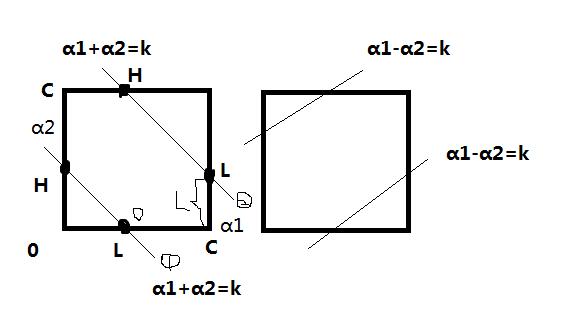

SVM的学习算法可以归结为凸二次规划问题。这样的凸二次规划问题你具有全局最优解，并且许多最优化算法可以用来求解，但是当训练样本容量很大，这些算法往往变得非常低效，以致无法使用。所以本文介绍了如何高效地实现支持向量机学习。
我们将用序列最小最优化（sequential minimal optimization, SMO）算法，求解
在这个问题中，变量是拉格朗日乘子，一个变量\(\alpha_i\)对应一个样本点\((x_i,y_i)\)；变量的总数等于样本容量N。
SMO算法是一种启发式算法，其基本思路是：
如果所有变量的解都满足此最优化问题的KKT条件，那么这个最优化问题的解就得到了（因为KKT条件是该最优化问题的充分必要条件）。否则选择两个变量，固定其他的变量，针对这两个问题构建一个二次规划问题。这个二次规划问题的解应该更接近二次规划问题的解（因为这会使得原始二次规划问题的目标函数值更小）。而且，这时子问题可以通过解析方法求解，这样就大大提高了整个算法的计算速度。
每一次，子问题都有两个变量，一个是违反KKT条件最严重的那一个，另一个由约束条件自动确定。如此，SMO算法将原问题不断分解为子问题并对子问题求解，进而得到原问题的最终解。
注意，每个子问题有两个变量，而不能是1个变量，因为当选择一个变量时，由于约束条件，其他变量的值就固定了该变量的值也就固定了。所以子问题中同时更新两个变量。
SMO算法包括两个部分：
（1）求解两个变量二次规划问题的解析方法
（2）选择变量的启发式方法
两个变量二次规划问题的求解方法
不失一般性，假设选择的两个变量是\(\alpha_1, \alpha_2\)，其他变量\(\alpha_i\)固定。那么SMO的最优化问题的子问题可以写成
以上的目标函数式省略了不含\(\alpha_1,\alpha_2\)的常数项。
首先，我们分析下约束条件，然后求此约束条件下的极小。
约束条件使得目标函数在一条平行于长度为C的正方形的对角线的线段上的最优值。这使得两个变量的最优化问题实质上是单变量的最优化问题，不妨考虑\(\alpha_2\)的最优化问题。
假设初始可行解为\(\alpha_1^{old},\alpha_2^{old}\)，最优解为\(\alpha_1^{new},\alpha_2^{new}\)。并假设在沿着约束方向未经剪辑1时\(\alpha_2\)的最优解为\(\alpha_2^{new, unc}\)。
由于\(\alpha_2^{new}\)需要满足不等式约束，所以最优值\(\alpha_2^{new}\)的取值范围必须满足条件：
其中L与H分别是\(\alpha_2^{new}\)所在的对角线段端点的界，如下图所示。最优解必须在正方形内且在与对角线平行的线上。

当\(y_1=y_2\)时，它们可以表示为：
此时有：
计算过程：
如图所示，先考虑L的取值。当直线为①情况时，L为0；当直线为②情况时，此时\(\alpha_1'=C\)，代入\(\alpha_1' + \alpha_2' = k\) 得到\(\alpha_2'= L = k - \alpha_1' = k - C = \alpha_1 + \alpha_2 - C\)。所以\(L=max(0, \alpha_1^{old}+\alpha_2^{old}-C)\)。然后考虑H的取值。当直线为①情况时，此时\(\alpha_1'=0\)，代入\(\alpha_1' + \alpha_2' = k\) 得到\(\alpha_2'= H = k - \alpha_1' = k = \alpha_1 + \alpha_2\)；当直线为②情况时，H为C。所以\(H=min(C, \alpha_1^{old}+\alpha_2^{old})\)。
当\(y_1 \neq y_2\)时，它们可以表示为：
此时有：
为了方便，记
令
\(E_i\)是函数g(x)对输入\(x_i\)的预测值与真实输出\(y_i\)之差。
下面，先求沿着约束方向 未经剪辑时\(\alpha_2\)的最优解\(\alpha_2^{new, unc}\)；然后再求剪辑后\(\alpha_2\)的解\(\alpha_2^{new}\)。可以证明2：
其中，
\(\phi(x)\)是输入空间到特征空间的映射。
这样就得到了最优化问题的解\((\alpha_1^{new},\alpha_2^{new})\)。
变量的选择方法
SMO算法在每个子问题中选择两个变量变化，其中至少一个变量是违反KKT条件的。
（1）第一个变量的选择
SMO称选择第1个变量的过程为外层循环。外层循环是在训练样本中选取违反KKT条件最严重的样本点，并将其对应的变量作为第1个变量。因此，需要检验训练样本点\((x_i,y_i)\)是否满足KKT条件。具体的，在线性支持向量机学习算法中根据KKT条件有：
当\(\alpha_i=0\)时，\(\mu_i=C\)，那么松弛变量\(\xi_i=0\)，得到\(y_ig(x_i) \geq 1\)；
当\(0 < \alpha_i < C\)时，\(\mu_i > 0\)，那么松弛变量\(\xi_i=0\)，得到\(y_ig(x_i) = 1\)；
当\(\alpha_i=C\)时，\(\mu_i=0\)，那么松弛变量\(\xi_i > 0\)，得到\(y_ig(x_i) = 1 - \xi_i\)即\(y_ig(x_i) \leq 1\)
在检验过程中，外层循环首先遍历所有满足条件\(0<\alpha_i < C\)的样本点，即在间隔边界上的支持向量点，检验它们是否满足KKT条件。如果都满足KKT条件，那么 再遍历整个数据集，检验它们是否满足KKT条件。
（2）第2个变量的选择
SMO称选择第2个变量的过程为内层循环。假设在外层循环中已经找到第1个变量\(\alpha_1\)，现在找第2个变量。第2个变量的选择标准是希望能使\(\alpha_2\)有足够大的变化。
\(\alpha_2^{news}\)是依赖于\(|E_1-E_2|\)的。一种简单的做法是选择\(\alpha_2\)，使其对应的\(|E_1-E_2|\)最大，因为\(\alpha_1\)已经确定，\(E_1\)也确定了。为了节省时间，把所有的\(E_i\)保存在一个列表中。
如果上面的方法还是不能是目标函数由足够的下降，那么采用启发式规则继续选\(\alpha_2\)。
（3）计算阈值b和差值\(E_i\) 每次完成两个变量的优化后，都要重新计算E，于是就还得重新计算阈值b。
当\(0<\alpha_1^{new}< C\)时，由KKT条件\(y_ig(x_i) = 1\)及\(y_i^2=1\)，有
于是
于是可得
同样如果\(0<\alpha_2^{new}< C\)时，可得
如果\(0<\alpha_1^{new}< C\)且\(0<\alpha_2^{new}< C\)时，\(b_1^{new}=b_2^{new}\)；
如果\(\alpha_1^{new},\alpha_2^{new}\)是0或者C，那么\(b_1^{new}, b_2^{new}\)以及它们之间的数都是符合KKT条件的阈值，这时选择它们的中点作为\(b^{new}\)。
每次完成两个变量的优化之后，更新对应的\(E_i\)值，并将它们保存在列表中，\(E_i\)值的更新要用到\(b^{new}\)值，以及所有支持向量对应的\(\alpha_j\)：
其中，S是所有支持向量\(x_j\)的集合。
SMO算法
输入：训练数据集T，精度\(\varepsilon\)
输出：近似解\(\widehat{\alpha}\)
（1）取初值\(\alpha^{(0)}=0\)，令k=0
（2）选取优化变量\(\alpha_1^{(k)},\alpha_2^{(k)}\)，解析求解两个变量的最优化问题，求得最优解\(\alpha_1^{(k+1)},\alpha_2^{(k+1)}\)，更新\(\alpha\)为\(\alpha^{(k+1)}\)；
（3）若在精度\(\varepsilon\)范围内满足停机条件
则转（4）；否则令k=k+1，转（2）
（4）取\(\widehat{\alpha}=\alpha^{(k+1)}\)。
Reference
统计学习方法第七章
-
未经剪辑是指未考虑\(0 \leq \alpha_i \leq C\)的约束条件时的值 ↩
-
求解过程如下： 记
$$v_i = \sum_{j=3}^{N}\alpha_jy_jK(x_i,x_j)= g(x_i)- \sum_{j=1}^{2}\alpha_jy_jK(x_i,x_j)-b, i=1,2$$目标函数变为：$$W(\alpha_1, \alpha_2)=\frac{1}{2}K_{11}\alpha_1^2+\frac{1}{2}K_{22}\alpha_2^2-(\alpha_1+\alpha_2)+y_1y_2K_{12}\alpha_1\alpha_2+y_1\alpha_1v_1+y_2\alpha_2v_2$$可以将\(\alpha_1\)表示为:$$\alpha_1=(\zeta - y_2\alpha_2)y_1$$代入目标函数，得到只含有\(\alpha_2\)的式子，对\(\alpha_2\)求导数，令其为0，并将\(\alpha_1^{old} y_1 + \alpha_2^{old}y_2= \zeta\)就可得到。 ↩
Comments